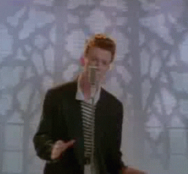

<!DOCTYPE html>
<html lang="en">
<head>
    <link rel="stylesheet" href="tribute.css">
    <meta charset="UTF-8">
    <meta name="viewport" content="width=device-width, initial-scale=1.0">
    <title>Tribute To the Pears</title>
</head>
<style>
    body { 
      background-image: url('phone.jpg');
      background-repeat: no-repeat;
      background-attachment: fixed;
      background-position: center; 
    }
    </style>
    <a href="index.html">
        
        </a>
        <audio autoplay>
            <source src="Rick_Astley_-_Never_Gonna_Give_You_Up_Qoret.com.mp3" type="audio/mpeg">
          </audio>
</body>

</html>


<h1>
    
</h1>
<p1 style="position: absolute; top: 10px; right: 40px;">
    "I feel my brains, <br>like a pear, <br>to see if it's ripe;
     <br>it will be exquisite by <br>September" <br>- Virginia Woolf 
</p1>

<p2 style="position: absolute; top: 250px; right: 40px;">
    "As was the custom<br> in such cases,<br> the pear tree was <br>charged with murder<br> and sentenced to<br> be uprooted <br>and burned." <br>- Robert Graves
</p2>

<p3 style="position: absolute; top: 230px; left: 70px;">
    "Of course you know him. <br>Everyone knows <br>a pear-shaped man." <br>- George R. R. Martin
</p3>

<p4 style="position: absolute; top: 10px; left: 200px;">
    "No.<br> Now, shut up<br> and eat your pears."<br> - Suzanne Collins
</p4>

<p5 style="position: absolute; bottom: 10px; left: 100px;">
    "There are only<br> ten minutes in the life<br> of a pear when it is perfect<br> to eat." <br>- Ralph Waldo Emerson
</p5>